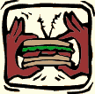

|
Introduction
to Renal Nutrition
|
|
.
When the kidney is
not functioning:
- Waste products from
digested foods build up in the blood (uremia).
- These waste products
are poisonous to the body.
- The wastes come from
foods containing protein, sodium, potassium, phosphorus, and
fluids.
The kidneys jobs
are:
- To remove protein
waste products from the blood.
- To remove excess water
from the body.
- To maintain the proper
chemical and water balance by removing excess minerals and fluid
from the body.
- To manufacture vital
hormones
|
| Renal:
concerning the kidneys. |
Because your kidneys
are not functioning properly, you may be feeling some uncomfortable
side effects such as a general ill feeling, loss of your appetite,
nausea, and high blood pressure. Dialysis removes waste products
from the body and helps decrease these side effects. Remember that
dialysis is not as efficient as normal kidneys and the waste products
build up between each treatment. For this reason, dialysis patients
need to follow a special diet.
The dietitian will work
with you and your family to develop a diet that meets your food
preferences and your lifestyle as much as possible. Your diet plan
may change periodically as your condition or type of dialysis changes.
Your dietitian will keep you informed of any changes needed in your
diet.
|
| Dialysis:
the process of removing wastes and maintaining the chemical balance
of blood when the kidneys no longer function. |
Your
Special Diet
- Helps control waste
products in the blood by limiting foods high in sodium, potassium,
and phosphorus. It also regulates protein foods and fluids.
- Helps you reach
and maintain your dry weight.
- Ensures that you
receive adequate nutrition with the aid of vitamin supplements
|
| REMEMBER!
Your diet is as important as the medicine and the treatments
prescribed by your doctor. It does affect your medical progress. |
|
|
| Hemodialysis:
the type of dialysis that removes excess body wastes and fluids from
the blood as it passes through an artificial kidney. |
Types of
Diet Therapy
Decreased Kidney Function
When it is first discovered that your kidneys are not functioning
as they should, your doctor may prescribe a diet low in protein
to slow down the progression of kidney disease. Your intake of phosphorus,
sodium, and potassium may also be reduced. Your dietitian will help
you and your family make the necessary changes in your diet.
|
| Dry
weight: the bodys true weight, without excess fluid. |
Hemodialysis
Your blood is cleaned
three times a week with this type of dialysis. Because waste products,
toxins, and fluid build up between dialysis treatments, it may be
important for you to be more cautious with food and fluids. If your
urine output is low you will need to limit fluids and salt intake.
Minerals like potassium and phosphorus now need to be monitored.
In most cases you will need to eat more protein than was allowed
prior to receiving dialysis treatments. You will also need to eat
enough calories to keep from losing "dry weight" unless
otherwise planned with the dietitian.
The diet order for hemodialysis
patients generally reads:
80 grams protein (may vary), 2000-3000 mg sodium, 2000 mg potassium,
1500 cc (6 cups) fluid
|
|
Rules for Eating During
Your Dialysis Treatment if Permitted
- Remember that it takes
time for food to digest. Waste products from what you eat at this
time will not be cleaned from your blood until your next
treatment.
- Fluid restrictions
still need to be considered. Drinking too much fluid during dialysis
makes it difficult to achieve your dry weight.
- Therefore, dont ignore
your diet while you dialyze!
|
|
Peritoneal dialysis:
a form of dialysis that uses the lining of the patients abdominal
cavity, the peritoneum, for dialysis
Dialysate:
the solution used during dialysis to pull waste products out of
the blood.
|
Peritoneal Dialysis
You will be making "daily"
exchanges with this method of dialysis, which allows for a more
constant removal of waste products and toxins most nearly like
your own kidneys. Consequently, your diet will include more sodium,
potassium and fluid than before. Protein "leaks out" in
this process, though, and you will be instructed to increase your
protein intake to replace what you lose. With peritoneal dialysis,
your body also absorbs sugar from the dialysate, which may cause
weight gain or may affect blood sugar for people with diabetes.
The diet order for peritoneal
dialysis patients generally reads:
100 grams protein (may
vary), 4000 mg sodium, 4000 mg potassium, 2000 cc (8 cups) fluid
|
Kidney Transplantation
Weight loss may be
necessary before your transplant surgery. After a successful
transplant, it is still important to watch your diet. Your food
choices should balance the effects of the medications that must
be taken to avoid rejecting the transplanted kidney. You will
discuss weight and cholesterol control with your dietitian.
Salt restriction is often still needed.
Your doctor and
dietitian have created a meal plan specifically for you in your
current health status. Keep in mind that your diet may change
as your blood tests are evaluated.
|
|
General Guidelines
for Your Personalized Meal Plan
The foods on this plan
are divided into six groups according to the amount of calories,
protein, potassium, and phosphorus they contain: meat and other
high protein foods, milk, starches, vegetables, fruits, and fats.
These food groups are also called exchange lists because foods within
the same group may be exchanged or traded for one another to
build your daily meals. Choose foods from the different lists to
meet your personal dietary needs and to add variety to your diet.
Exchange lists:
foods put into groups based on their nutritional content.
|

Helpful Hints for
Success
- Follow your daily
food plan and meal pattern when selecting your meals for the day.
Be certain to include all the foods allowed daily to meet your
nutritional needs.
- Use only the foods
listed on your meal plan in the amounts shown. Do not add new
foods without the advice of your doctor or dietitian.
- Measure foods accurately.
Obtain a food scale, a set of measuring spoons, and a set of measuring
cups, both dry and liquid measure.
- Be sure to contact
the dietitian if you need help with your diet.
- Read all labels carefully
before buying and avoid purchasing food containing salt, sodium
compounds, or salt substitute (potassium chloride).
- Do not use a "salt
substitute" because it contains potassium.
- Do not use salt during
food preparation or at the table.
|
|
Average
Nutrient Content per Exchange or Serving
|
|
Group
|
Calories
|
Protein
(gm)
|
Potassium
(mg)
|
Phosphorus
(mg)
|
Sodium
(mg)
|
|
Meat and Other High Protein
Foods
|
75
|
7
|
80
|
85
|
80
|
|
Milk
|
80
|
4
|
175
|
120
|
95
|
|
Starches
|
80
|
2
|
65
|
45
|
100
|
|
Vegetables
|
25
|
1
|
- 100
- 200
- 300
|
20
|
10
|
|
Fruits
|
60
|
0.5
|
- 100
- 200
- 300
|
20
|
10
|
|
Fats
|
45
|
0
|
7
|
10
|
50
|
|
| Potassium |